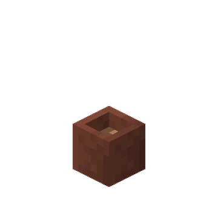
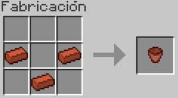

La maceta es un bloque decorativo que permite colocar flores.
La maceta se consigue en una mesa de crafteo con 3 ladrillos

Tambien se puede encontrar en diversas estructuras
 mesa de crafteo con 3 ladrillos mesa de crafteo con 3 ladrillos
mesa de crafteo con 3 ladrillos mesa de crafteo con 3 ladrillos